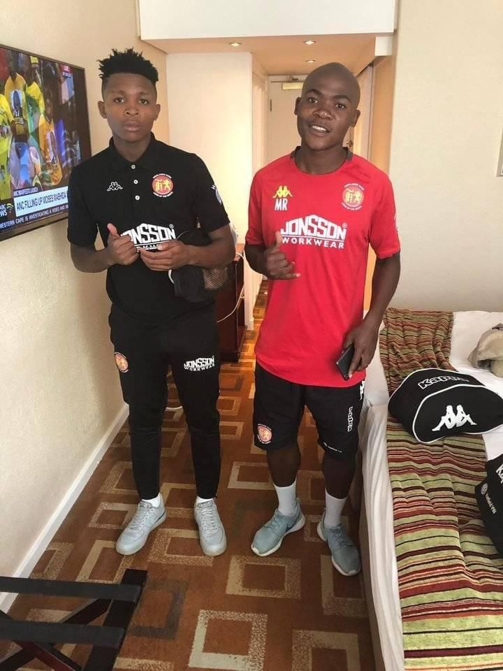

About Us
At ndou Ronaldo we live and breathe soccer. Our mission is simple: to provide players of all levels with the best soccer boots designed for performance, comfort, and style. Whether you’re stepping onto the pitch for the first time or competing at a professional level, the right boots can make all the difference — and that’s where we come in. We specialize in offering a wide range of soccer boots tailored to different playing styles, surfaces, and preferences. From lightweight speed boots to powerful control-focused designs, every pair is carefully selected to help you play your best game. What makes us different? * **Expert Knowledge:Our team consists of passionate soccer players who understand the game and the gear. * **Quality First:We only stock trusted brands and innovative designs that deliver on performance. * **For Every Player:Whether you’re a junior, amateur, or pro, we have boots that fit your level and budget. * **Customer Focused:We’re here to guide you in choosing the perfect pair that matches your style of play. At Ndou Ronaldo's Agency, we believe soccer isn’t just a sport — it’s a way of life. And with the right boots, every step, sprint, and strike brings you closer to greatness.
our mission
At ndou ronaldo's agency our mission is to empower every soccer player with the perfect pair of boots that unlocks their true potential on the field. We aim to bridge the gap between passion and performance by providing high-quality, comfortable, and stylish soccer boots that suit every playing style, position, and level of the game. We believe that the right boots are more than just footwear — they are a player’s foundation for speed, control, and confidence . That’s why we are committed to: * Delivering top-quality soccer boots that enhance performance. * Offering a wide selection for all surfaces, skill levels, and budgets. * Sharing expert advice to help players choose boots that fit their game. * Building a community of soccer lovers who value passion, dedication, and teamwork. With every pair of boots, we strive to inspire players to play harder, dream bigger, and achieve more.
To be a leading agency in th country
Meet our team

Behind ndou matamela agency is a passionate team of soccer enthusiasts, athletes, and footwear experts
who share one goal — helping players perform at their best. We combine our love for the game with years of
experience in sports gear to bring you the perfect soccer boots for every style of play.
*Soccer Lovers: Every member of our team has played the game from local leagues to competitive matches
so we truly understand the needs of players.
*Gear Experts: We study the latest designs, technologies, and trends to ensure our boots deliver performance,
comfort, and durability.
*Customer Champions: Your success is our success. We pride ourselves on guiding you to the right pair of boots
that fit your style, position, and surface.
Our team isn’t just selling soccer boots we’re sharing our passion for the sport and making sure you step onto
the pitch with confidence. Together, we aim to build a community where players of all levels feel supported, inspired,
and ready to chase their goals.